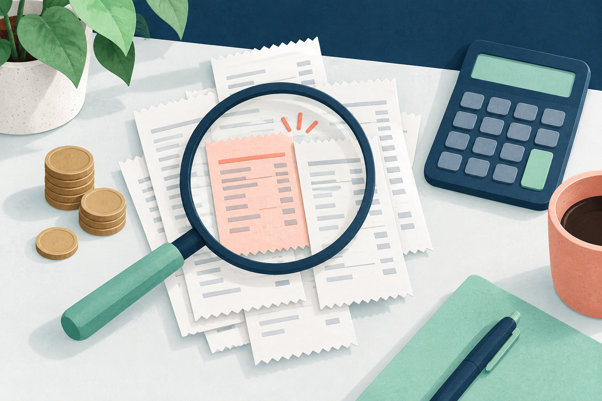

Revisión del plan
Errores frecuentes al calcular el dinero disponible
Un plan puede parecer holgado por un ingreso contado dos veces o un gasto omitido. Revisa estos casos antes de confiar en el saldo final.

Ejemplo educativo con importes ficticios en una misma moneda. El día 1 representa hoy.
1. Sumar al saldo un cobro que todavía no llegó
Diego tiene 90, espera cobrar 160 el día 3 y pagará 100 el día 2. Si escribe 250 como saldo inicial y además añade el cobro de 160, contará ese dinero dos veces.
El plan correcto empieza en 90, baja a −10 el día 2 y sube a 150 el día 3. El plan duplicado empieza en 250 y termina en 310, ocultando el faltante. Introduce los 90 disponibles y registra los 160 solo como movimiento futuro; marca el cobro como estimado si es incierto.
2. Restar de nuevo un pago ya descontado
Si tenías 100 y pagaste 20, el nuevo saldo es 80. Empezar con 80 y añadir otra vez ese pago deja una proyección de 60 sin motivo. Antes de copiar movimientos, comprueba si el saldo inicial ya los refleja.
Si un cargo todavía no afecta al saldo disponible que elegiste, puede seguir siendo un pago pendiente. La clave es usar la misma referencia, no tachar todos los movimientos por su fecha.
3. Olvidar gastos pequeños o repetidos
Cinco pagos de transporte de 6 suman 30. Con 75 disponibles, ignorarlos deja una previsión de 75 cuando quedarían 45. Anota cada fecha si necesitas saber qué día se reduce el margen; CashPlan no crea repeticiones por sí solo.
4. Confundir saldo final con dinero utilizable hoy
En el primer ejemplo, terminar en 150 no cambia que el día 2 falten 10. Lee la secuencia diaria. Si un cobro y un cargo están en la misma fecha, el cierre tampoco muestra cuál procesará primero el banco.
5. Contar transferencias o mezclar monedas como si fueran ingresos
Pasar 40 de tu cuenta a tu efectivo no aumenta el dinero total si ambos ya forman parte del saldo conjunto. Añadirlo como cobro inflaría el plan en 40. Si solo estás planificando una cuenta, mantén todos los movimientos y el saldo dentro de ese mismo alcance.
Tampoco sumes 100 en una moneda y 100 en otra como si fueran 200 de la misma. CashPlan adapta formatos al cambiar de país, pero no hace conversión de divisas.
6. Comparar simulaciones con fechas finales distintas
Un original que termina antes de un pago puede mostrar más dinero que una simulación que ya lo incluye. Antes de atribuir la diferencia al cambio que probaste, iguala el horizonte y verifica el saldo inicial de ambos planes.
Qué puedes hacer hoy
Revisa cuatro cosas antes de interpretar el resultado: saldo disponible actual, pagos ya descontados, ingresos todavía pendientes y fecha final. Después consulta la primera fecha negativa y el escenario sin cobros estimados.
Probar en CashPlanCómo usar la herramienta
El plan se mantiene en la memoria de la pestaña; no se guarda al actualizar o cerrar. CashPlan no consulta el banco ni garantiza el orden de los cargos.